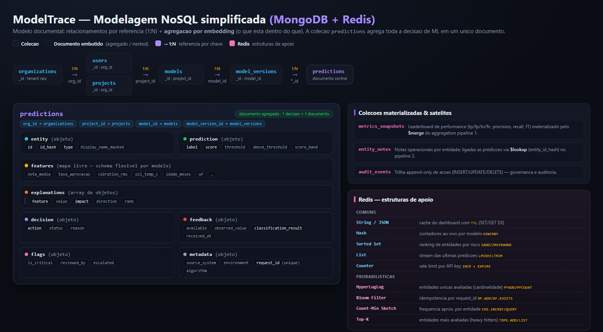

ModelTrace — Pipeline de Banco NoSQL
Observabilidade e governanca de decisoes de Machine Learning sobre um modelo documental (MongoDB) + chave-valor / probabilistico (Redis).
Um unico arquivo de CRUD: docs/pipeline/crud_pipeline.py
01Modelagem — referencia (1:N) + agregacao (embedding)
A colecao predictions agrega toda a decisao em 1 documento; sub-documentos ficam embutidos.

02Criar & popular as principais colecoes
# cria as colecoes + indices (inclui unique) for name in MAIN_COLLECTIONS: self.db.create_collection(name) self.db.predictions.create_index( [("metadata.request_id", ASCENDING)], unique=True, sparse=True) # idempotencia # popula org, users, projects, models, versions self.db.organizations.insert_one({...}) self.db.users.insert_many([...]) # e ~1.040 predicoes em lote: self.db.predictions.insert_many(batch)
Colecoes populadas
| organizations | 1 | projects | 3 |
| users | 2 | models | 4 |
| model_versions | 8 | predictions | 1.040 |
| metrics_snapshots | 8 | entity_notes | 18 |
| audit_events | 3 |
Dominios: educacao (evasao TCC), industrial (Vale) e economico (CNPJ).
03CRUD — INSERT com idempotencia (Bloom Filter)
def insert_prediction(self, doc): req = doc["metadata"]["request_id"] # Bloom: ja processamos esse request? if self.r.execute_command( "BF.EXISTS", "mt:seen_requests", req): return {"status": "duplicate_skipped"} self.db.predictions.insert_one(doc) self.redis_ingest(doc) self.append_audit(doc["project_id"], "prediction.created", {...}) return {"status": "inserted"}
Log de saida
1a insercao: {'status': 'inserted', 'prediction_id': 'pred_f47…'} 2a insercao (mesmo request_id): {'status': 'duplicate_skipped', 'request_id': 'manual_demo_0001'}
O Bloom Filter evita reprocessar a mesma decisao — O(1), ~138 KB para 100k requests.
04CRUD — FIND · UPDATE · DELETE
# FIND: filtro + projecao + sort + paginacao self.db.predictions.find(filter_, projection) \ .sort([("prediction.score", -1)]) \ .skip(skip).limit(limit) # UPDATE one: anexa feedback (sub-doc embutido) self.db.predictions.update_one( {"_id": pred_id}, {"$set": {"feedback.available": True, "feedback.classification_result": cls}}) # UPDATE many / DELETE many self.db.predictions.update_many(flt, {"$set": {...}}) self.db.predictions.delete_one({"_id": pred_id})

05Aggregation Pipeline 1 — Leaderboard de modelos
Funcionalidade: ranquear modelos por F1 a partir do feedback real. Resultado materializado com $merge.
[{"$match": {"feedback.available": True}},
{"$group": {"_id": {"model_id":"$model_id",
"version":"$model_version"},
"tp":{"$sum":{"$cond":[{"$eq":[
"$feedback.classification_result","tp"]},1,0]}} }},
{"$set": {"f1": /* 2PR/(P+R) */ }},
{"$lookup": {"from":"models","localField":"_id.model_id",
"foreignField":"_id","as":"model"}},
{"$unwind":"$model"}, {"$project": {...}},
{"$sort": {"f1": -1}},
{"$merge": {"into":"metrics_snapshots","on":"_id"}}]
Resultado
| modelo | F1 | P | R | n |
|---|---|---|---|---|
| RandomForest v1 | .704 | .731 | .679 | 43 |
| XGBoost v2 | .620 | .635 | .606 | 130 |
| RandomForest v2 | .614 | .595 | .633 | 149 |
| DontGo v2 | .339 | .455 | .270 | 142 |
V1 lidera em F1, mas com n=43; v2 tem 3x mais feedback — trade-off amostra × metrica.
06Aggregation Pipeline 2 — Drivers de risco
Funcionalidade: quais features empurram a decisao para "risco alto" + amostra auditavel aleatoria.
[{"$match": {"project_id": pid,
"prediction.score_band":{"$in":["high","critical"]}}},
{"$facet": {
"drivers":[{"$unwind":"$explanations"},
{"$group":{"_id":"$explanations.feature",
"avg_impact":{"$avg":"$explanations.impact"}}},
{"$sort":{"avg_impact":-1}},{"$limit":5}],
"audit_sample":[{"$sample":{"size":3}},
{"$lookup":{"from":"entity_notes", ...}}],
"universe":[{"$count":"high_risk_total"}] }}]
Resultado (educacao)
| feature | impacto medio | top driver |
|---|---|---|
| taxa_aprovacao | 0.157 | 44x |
| qtd_reprovacoes | 0.154 | 58x |
| delta_nota | 0.152 | 43x |
| nota_media | 0.151 | 70x |
Universo de risco alto: 280 docs
07Redis — estruturas comuns
# Hash: contadores ao vivo por modelo r.hincrby("mt:counters:{model}", "predictions", 1) # Sorted Set: ranking de risco por projeto r.zadd("mt:risk:{proj}", {entity: score}, gt=True) # List: stream das ultimas predicoes r.lpush("mt:stream:{proj}", payload); r.ltrim(k,0,49) # String cache com TTL r.set("mt:cache:dashboard", json, ex=120) # Counter + EXPIRE: rate limit por API key n = r.incr(k); r.expire(k, 60) return n <= limit
Uso no sistema
| Estrutura | Recurso |
|---|---|
| String | cache do dashboard |
| Hash | KPIs por modelo |
| Sorted Set | top entidades de risco |
| List | feed de atividade |
| Counter | rate limit de API |
rate limit 5/60s → [T,T,T,T,T,F,F]
08Redis — estruturas probabilisticas
# HyperLogLog: entidades unicas (cardinalidade) r.pfadd("mt:hll:entities:{model}", entity_id) r.pfcount(k) # ~= 65 # Bloom Filter: idempotencia por request_id r.execute_command("BF.ADD", "mt:seen_requests", req) r.execute_command("BF.EXISTS","mt:seen_requests", req) # Count-Min Sketch: frequencia aprox. por entidade r.execute_command("CMS.INCRBY", "mt:entity_freq", e, 1) # Top-K: heavy hitters (entidades mais avaliadas) r.execute_command("TOPK.ADD", "mt:top_entities", e)
Por que probabilistico?
- HyperLogLog — milhoes de entidades unicas em ~12 KB.
- Bloom — dedup O(1) sem consultar o Mongo; casa com o request_id unique.
- Count-Min — frequencia aproximada com memoria fixa.
- Top-K — top entidades sem ordenar tudo.
Bloom: 1.041 itens · capacidade 100k · 138 KB
09Prototipo Streamlit — telas de CRUD
Funcionalidade mais importante: gerir decisoes de ML. Campos dinamicos por contrato do modelo.


10Como rodar & checklist da entrega
# 1) infra (Docker) docker run -d -p 27018:27017 mongo:7 docker run -d -p 6380:6379 redis/redis-stack-server # 2) pipeline de banco (cria, popula, CRUD, agg, redis) python docs/pipeline/crud_pipeline.py # 3) prototipo de interface streamlit run docs/pipeline/streamlit_app.py
Um unico arquivo de CRUD: crud_pipeline.py. Logs em docs/pipeline/logs/.
Entregaveis
- ✅ Prototipo Streamlit da funcionalidade principal
- ✅ Criar & popular principais colecoes
- ✅ INSERT / FIND / UPDATE / DELETE (telas + codigo)
- ✅ Prints de cada tela e cada colecao
- ✅ 2 aggregation pipelines (match, group, set, lookup, unwind, project, sort, merge, sample, facet, count)
- ✅ Redis: 5 estruturas comuns + 4 probabilisticas
- ✅ ER simplificado com agregacoes